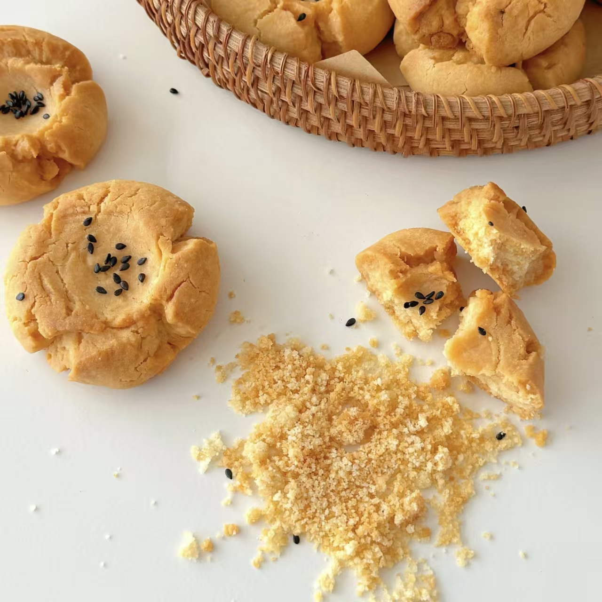
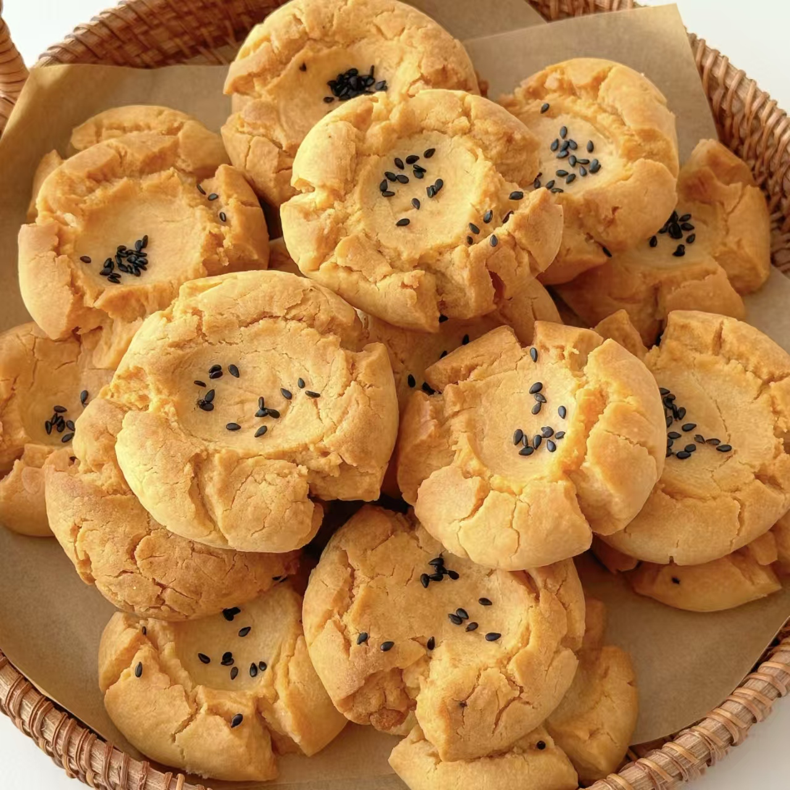
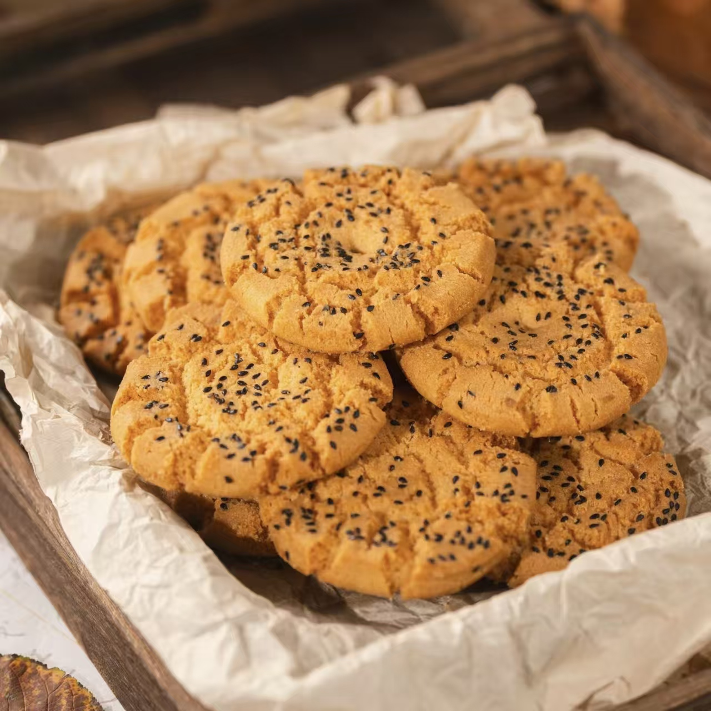

桃酥



桃酥起源于江西。是一种南北皆宜的汉族传统特色小吃，以其干、酥、脆、甜的特点闻名全国，主要成分是面粉、鸡蛋、油酥等。相传在唐元时期，江西景德镇周边县乐平、贵溪、鹰潭等地农民纷纷前往做陶工，由于当时工作繁忙，当时有一位乐平农民将自家带来的面粉搅拌后直接放在窑炉表面烘焙，由于其常年咳嗽，平日常有食桃仁止咳习惯，故在烘焙时候会加入桃仁碎末。其他瓷工见此法做的干粮便于日常保存和长途运送瓷器时候食用，便纷纷仿效，因并取名“陶酥"。后谐音为桃酥。
制作方法：

桃酥起源于江西。是一种南北皆宜的汉族传统特色小吃，以其干、酥、脆、甜的特点闻名全国，主要成分是面粉、鸡蛋、油酥等。相传在唐元时期，江西景德镇周边县乐平、贵溪、鹰潭等地农民纷纷前往做陶工，由于当时工作繁忙，当时有一位乐平农民将自家带来的面粉搅拌后直接放在窑炉表面烘焙，由于其常年咳嗽，平日常有食桃仁止咳习惯，故在烘焙时候会加入桃仁碎末。其他瓷工见此法做的干粮便于日常保存和长途运送瓷器时候食用，便纷纷仿效，因并取名“陶酥"。后谐音为桃酥。
关于我们|联系我们|邮箱：@qq.com|友情链接